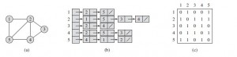

各种基本概念
1.图：顶点集合和顶点间的二元关系集合组成的数据结构，用G（V,E）表示。其中顶点集合用V(G)表示，边的集合用E(G)表示。
2.无向图：图中所有的边都没有方向性的图成为无向图。
3.有向图：图中所有的边都有方向性的图成为有向图。
4.边和点：
5.基图：忽略有向图的所有边的方向，得到的图称为该有向图的基图。
6.完全图：如果无向图中任何一对顶点之间都有一条边，这种无向图称为完全图。
7.有向完全图：如果有向图中任何一对顶点之间都有一条边，这种有向图称为有向完全图。
8.稀疏图：边或弧的数目相对较少的图称为稀疏图。
9.稠密图：边或弧的数目相对较多的图称为稀疏图。
10.平凡图：只有一个顶点的图称为平凡图，平凡图的阶为1.
11.零图：边的集合为空的图成为零图。
12.度：一个顶点的度数是与它相关联的边的数目，记作deg(u)。在有向图中，顶点的度数等于该顶点的入度和出度的和。某一个顶点的出度是以该顶点为起点的有向边的数目，记作od(u)，某个顶点的入度是以该顶点为终点的有向边的数目，记作id(u)。
拓展：在无向图和有向图中，所有顶点度数总和等于边数的两倍。
13.奇点和偶点：度数为基数的顶点为奇点，度数为偶数的顶点为偶点。
14.孤立顶点：度数为0的顶点称为孤立顶点。
15.路径：从一个点出发，经过一系列的点到达另一个点的通路称为两点之间的路径（路径可以包含很多点）。
16.生成树：一个无向联通图的生成树是它的包含所有顶点的极小连通子图，这里所谓的极小指边的数目极小。
17.连通分量：如果一个无向图不是连通的，则其极大连通子图成为连通分量。这里所谓的极大指子图中包含的顶点个数极大。
18.强连通图：对于图中每一对顶点
19.强连通分量：对于非强连通图，其极大强连通子图称为其强连通分量。
图的存储表示
1.邻接矩阵
设G(V,E)是一个具有n个顶点的图，矩阵是一个n*n的二维数组，用Edge[i][j]表示。
i,j分别代表一条边的两个端点，如果两个端点之间有直接相连的边，则Edge[i][j]存储为1，否则存储为0.
注意：邻接矩阵不能够表示以下形式：
（1）图中存在自身环。
（2）多条边的起点一样，终点也一样，称为重边。
示例：每行输入两个数，代表两点之间有边存在，顶点编号最大为100.
描述代码为：
int Edge[101][101];
int n,m,i,j,u,v;
while(scanf("%d%d",&n,&m))//n个点，m条边
{
memset(Edge,0,sizeof(Edge));
if(n == 0 && m == 0)
break;
for(i = 0;i < m;i++)
{
scanf("%d%d",&u,&v);//读入边的起点和终点
Edge[u][v] = 1;//标记该边已存在
}
for(i = 1;i <= n;i++)//计算每个顶点的出度
{
int od = 0;
for(j = 1;j <= n;j++)
{
od += Edge[i][j];
}
printf("第%d个顶点的出度为%d\n",i,od);
}
//用相似的方法计算每个顶点的入度，固定j,遍历i即可。
}
2.邻接表

如上图所示，最右边的矩阵是最左边的图对应的邻接矩阵
中间是最左边的图对应的邻接表。可以看出，邻接表是一个个链表的形式，前面是一个头结点，代表没一个顶点，后面是一条条的链表，代表该顶点相关联的边的另一个顶点。
邻接表的结构体声明：
#define MAXN 100
struct ArcNode//边结点
{
int adjvex;//有向边的另一个邻接点的序号
ArcNode *nextarc;//指向下一个边结点的指针
};
struct VNode//顶点
{
int data;//顶点信息
ArcNode *head1;//出边表的表头指针
ArcNode *head2;//入边表的表头指针
};
struct LGraph//图的邻接表存储结构
{
VNode vertexs[MAXN];//顶点数组
int vexnum , arcnum;//顶点数目和边的数目
};
LGraph lg;
建立邻接表的基本操作为：
void CreateLG()
{
int i = 0;
ArcNode *pi;
int v1,v2;
lg.vexnum = lg.arcnum = 0;
scanf("%d%d",&lg.vexnum,&lg.arcnum);
for(i = 0;i < lg.vexnum;i++)
{
lg.vertexs[i].head1 = lg.vertexs[i].head2 = NULL;
}
for(i = 0;i < lg.arcnum;i++)
{
scanf("%d%d",&v1,&v2);
pi = new ArcNode;
pi->adjvex = v2;
pi->nextarc = lg.vertexs[v1].head1;
lg.vertexs[v1].head1 = pi;
pi = new ArcNode;
pi->adjvex = v1;
pi->nextarc = lg.vertexs[v2].head2;
lg.vertexs[v2].head2 = pi;
}
}
存储分析
1.邻接表的时间复杂度为O（m）或O(2m)（无向图），邻接矩阵的时间复杂度为O(n2)。
2.邻接表的空间复杂度为O(n+ m）或O(n + 2 * m)；邻接矩阵的空间复杂度为O(n * n);